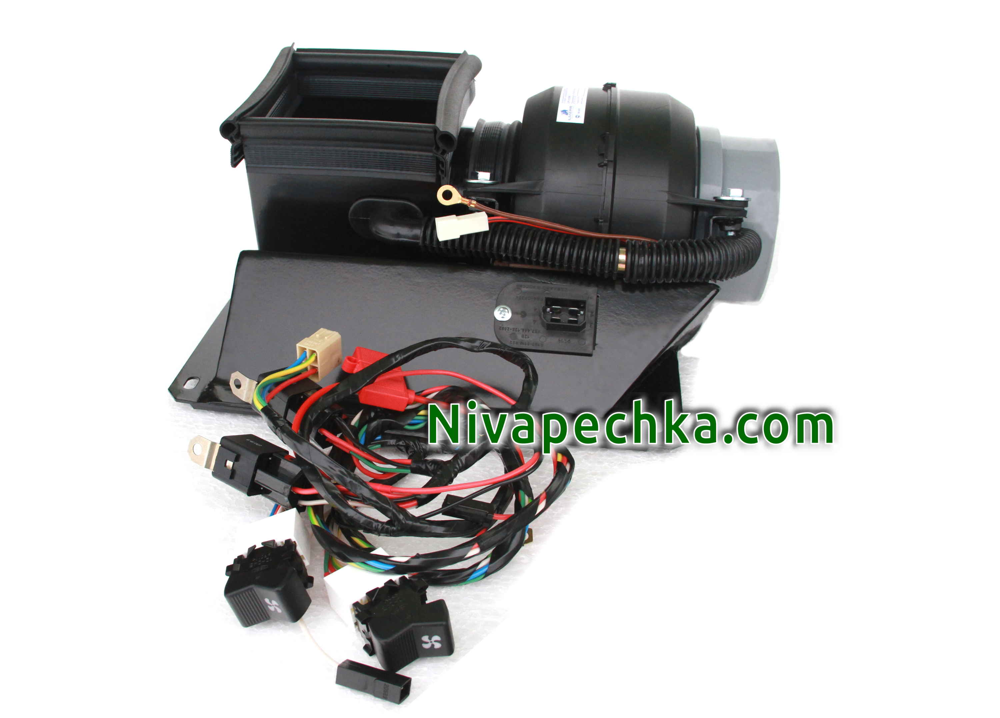

Как установить вентилятор 2108 в Ниву поможет комплект МАКСИ КОМПАКТ с подсветкой.
Обновлено:
Как самому установить вентилятор печки 2108 в Ниву как правильно подключить вентилятор 2108? Как сделать четыре скорости печки в Ниве да еще и переключатель скорости отопителя с подсветкой? На все эти вопросы дает ответ комплект Нива-печка МАКСИ КОМПАКТ окрашенный корпус жгут с подсветкой на четыре скорости для установки на Ниву любого года выпуска. И хоть мы позиционируем его как комплект начального уровня вы получаете полноценную печку в Ниве с вентилятором отопителя 2108 и четырьмя скоростями регулировки печки.

Корпус КОМПАКТ для этого комплекта изготовлен промышленным способом и позволяет быстро и без трудностей внедрить улитку восьмерочного вентилятора в Ниву.
Входящий в комплект УСИЛЕННЫЙ ЖГУТ НА 4-СКОРОСТИ 2-КЛАВИШИ НИВА
с подсветкой или УСИЛЕННЫЙ ЖГУТ НА 4-СКОРОСТИ КАЛИНА
позволит вам даже самостоятельно подключить венитилятор
2108 к электрооборудованию Нивы. Вам даже не нужно будет для подключения вентилятора 2108 в Ниве разрезать ни одного провода!
Все подключения выполнены на штекерах и подробно описаны в инструкции по установке Нива-печка. Но так как это все же комплект
начального уровня, для его установки необходимо удалить заслонку воздухозаборника под капотом у Нивы. И в нем нет возможности устанавливать салонный фильтр.
Если вам интересно все же оставить заслонку воздухозаборника под капотом у Нивы надо рассмотреть комплект
МАКСИ КЛАССИК . А если есть желание установить
в Ниву 21213 21214М 2131 LADA 4x4 URBAN салонный фильтр
то вам поможет комплект МАКСИ С САЛОННЫМ ФИЛЬТРОМ .
Как установить вентилятор 2108 в Ниву поможет комплект МАКСИ КОМПАКТ с подсветкой.